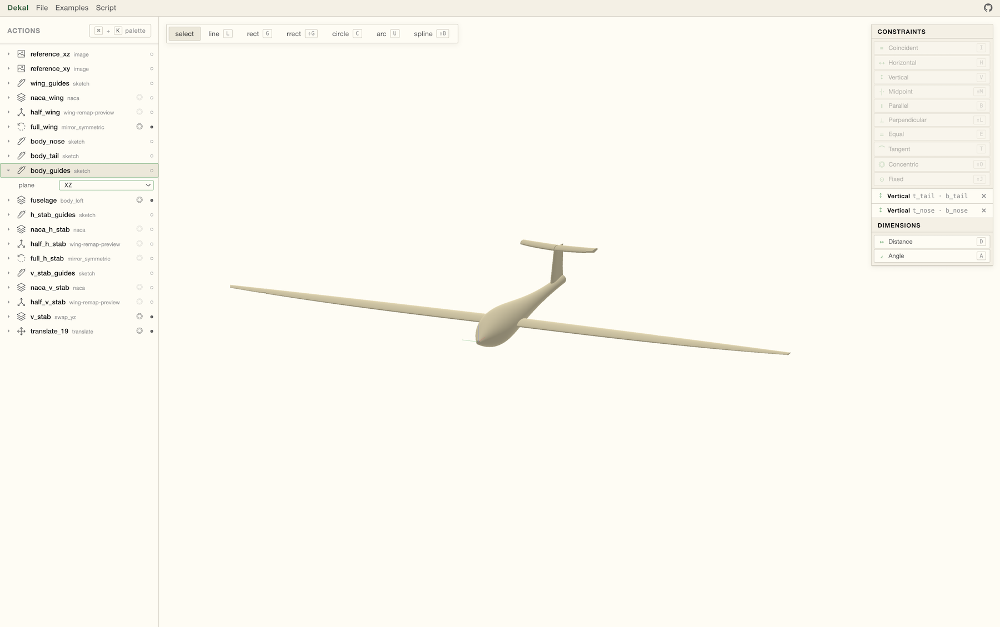

Tools to accelerate hardware design.

Dekal is building open-source implicit CAD design tools to enable rapid iteration in mechanical engineering.
As opposed to conventional BRep mechanical design software, which is crippled by slow sequential execution and topological instability, Dekal is built from the ground up to produce unbreakable geometry running lightning fast on parallel compute, such as GPUs.
Dekal does not rely on a single giant sequential CPU operation like conventional CAD. Instead, implicit models are evaluated in parallel by sampling an array of 3D points on the GPU.
Conventional CAD suffers from topological instabilities that lead to broken models that fail to rebuild. Implicit geometry doesn't suffer from that problem. Models always rebuild, and can be used in automated design improvement pipelines as a result.
Just like neural nets, implicit models are represented through a graph representing a giant mathematical function. As such, implicit models can be embedded in the same training processes used to train neural nets, where parameters get improved through gradient descent.
Existing implicit modeler libraries mostly rely on the evaluation of closed-form mathematical expressions - such as addition, multiplication, exponential, sinusoid, etc. - to produce the geometry. See the operations supported in Matt Keeter's Fidget library for example.
This technique has proven to be suited for the generation of very complex 3D models, as demonstrated by the work of Inigo Quilez. But despite its philosophical elegance, there is a fundamental impedance mismatch between the power of implicit modeling and engineers' creative intent, as engineers rarely think in terms of fundamental mathematical operations to describe shapes.
Dekal aims to close that gap by providing engineers with a user interface that they are familiar with — sketches, curves, splines, surfaces — while evaluating the model using implicit modeling techniques to preserve its benefits over conventional BRep kernels.
Why hasn't implicit modeling taken over CAD?
Probably for two reasons. First, evaluating an
implicit model requires powerful parallel hardware
like GPUs, which only became widely available
relatively recently, long after CPUs.
Second, as stated above, existing implicit modeling
libraries focus on describing objects using
closed-form mathematical expressions such as
addition, multiplication, sinusoid, exponential, etc.
Those expressions don't correspond to how engineers
think about the objects they want to model, and that
gap still needs to be closed.
What does modeling using implicits look like?
Implicit models are generated through a series of
operations, similar to a feature tree in
conventional CAD.
Each new step refers to a previous step but can't
refer to a feature of the generated model itself.
For example, you can't select a specific edge to be
chamfered. At least not yet...
What are the design areas where implicit modeling shines?
Here are some examples:
- Early in the product development phase when a
large number of potential design implementations
need to be generated and evaluated
- For complex structures that are manufactured
through additive manufacturing
- For the generation of manufacturing tooling
What are the domains where implicit modeling is less effective than conventional "BRep" CAD?
Implicit modeling is typically less effective during the detailed design process. For example, specific design-for-manufacturing modifications are difficult to produce since you can't select specific features on the model itself.
What user interface does Dekal provide?
Dekal offers a conventional visual design workbench as well as a scripting interface to generate models through code.
Can I generate models using AI / LLMs?
Yes, thanks to robust topology and the code being the entire source of truth, implicit modeling is particularly well suited to AI generation.
Does Dekal have a constraint solver?
Yes, Dekal offers both a conventional sketch constraint system as well as a 3D constraint system heavily inspired by robot kinematics design. See the demo here.
What files can I export? Does Dekal support STEP files?
At the moment Dekal can only export meshes.
How can I simulate my design?
For the moment, you can export a mesh and load it into any simulation program.
Why is it called "implicit"?
In conventional CAD, the model is stored as a series
of 2D surfaces within the 3D space. Even without the
feature tree, you can still visualize and store
those surfaces by themselves.
In implicit modeling, the only way to view the model
is by evaluating the function that defines it. There
is no source of truth for the model other than
this function.
Can I try Dekal?
Yes, check out the live tool here.